Lesson 9 · step 3 follow-ups · component states
2026-11-06. Five follow-ups, made through the tokens and components, each in both themes. This page shows every state that changed, before (commit d811d69, the end of step 3) and after, dark and light: 21 component states and 2 screens. Each state is the real one, forced by Chrome DevTools on the control and its ancestors (scripts/review_states.mjs). A theme where the state didn't change shows the after shot, dimmed. A state counts as changed when any computed style of the part changed, so a radius that computes differently but draws the same pixels at this size still shows here.
- The date tile and the format chip stay one level above their card and move up with it:
--raised-hoverand--raised-pressedwhile the card is hovered or pressed (Race card, Result row), so they never merge into the card's state. - The pressed amber dims:
--accent-pressedand the dark--accent-ink-pressedare--amber-69#DF9A46, darker than rest, its hue 7° warmer, clear of HYROX yellow under rule 3b on its own (26.6°, ΔE 25.8); the build stops if it isn't. Hover stays one step lighter. The light ink pressed stays--amber-26, so the Top bar's pressed shot changes in dark only. - Tab bar icons are chosen by
data-tab, not by where the tab links, so the specimens show the real compass, stopwatch and person instead of squares. - One capsule rule: the search field, Filters, the action bar's button, the active filter chips, the tab bar and its tabs take
--radius-capsule; the three half-height radii are retired. At this text size the shapes draw the same; at 200% text they stay capsules. - A field error replaces only its own field's helper: on New password with the passwords not matching, "At least 8 characters." stays; on Profile, the group note "Changes save as you make them…" stays beside a save error.
The state roles · 18, each in both themes
| Role | Dark | Light |
|---|---|---|
--surface-hover | --graphite-17 #272B30 | --graphite-93 #E9EBEE |
--surface-pressed | --graphite-20 #2C3035 | --graphite-89 #DCDFE3 |
--raised-hover | --graphite-20 #2C3035 | --graphite-89 #DCDFE3 |
--raised-pressed | --graphite-23 #33383E | --graphite-85 #D0D5DB |
--group-hover | --graphite-23 #33383E | --graphite-93 #E9EBEE |
--group-pressed | --graphite-26 #383D43 | --graphite-89 #DCDFE3 |
--sheet-hover | --graphite-20 #2C3035 | --graphite-93 #E9EBEE |
--sheet-pressed | --graphite-23 #33383E | --graphite-89 #DCDFE3 |
--bar-hover | --graphite-12 #1D2024 | --graphite-93 #E9EBEE |
--bar-pressed | --graphite-17 #272B30 | --graphite-89 #DCDFE3 |
--accent-pressed | --amber-69 #DF9A46 | --amber-69 #DF9A46 |
--accent-ink-pressed | --amber-69 #DF9A46 | --amber-26 #5A3604 |
--text-hover | --graphite-79 #BFC4CA | --graphite-27 #3B4046 |
--text-pressed | --graphite-69 #A3A9B0 | --graphite-39 #575C63 |
--boundary-hover | --graphite-69 #A3A9B0 | --graphite-39 #575C63 |
--boundary-pressed | --graphite-79 #BFC4CA | --graphite-27 #3B4046 |
--focus | --graphite-96 #F4F5F6 | --graphite-7 #131518 |
--opacity-disabled | --alpha-40 40% | --alpha-38 38% |
Contrast of the state pairs the build checks (generated at the end of tokens.css; the build stops if one fails in either theme):
| Pair | Dark · light · needs |
|---|---|
--text-primary on --raised-hover dar | k 12.17 light 13.68 needs 4.5 text |
--text-secondary on --raised-hover dar | k 5.60 light 5.04 needs 4.5 text |
--on-accent-fill on --accent-hover dar | k 11.63 light 11.63 needs 4.5 text |
--text-primary on --surface-hover dar | k 13.05 light 15.31 needs 4.5 text |
--text-secondary on --surface-hover dar | k 6.01 light 5.64 needs 4.5 text |
--text-primary on --surface-pressed dar | k 12.17 light 13.68 needs 4.5 text |
--text-secondary on --surface-pressed dar | k 5.60 light 5.04 needs 4.5 text |
--error on --surface-hover dar | k 5.87 light 5.48 needs 4.5 text |
--error on --surface-pressed dar | k 5.48 light 4.90 needs 4.5 text |
--text-primary on --raised-pressed dar | k 10.83 light 12.39 needs 4.5 text |
--text-secondary on --raised-pressed dar | k 4.99 light 4.56 needs 4.5 text |
--text-primary on --group-hover dar | k 10.83 light 15.31 needs 4.5 text |
--text-secondary on --group-hover dar | k 4.99 light 5.64 needs 4.5 text |
--text-primary on --group-pressed dar | k 10.04 light 13.68 needs 4.5 text |
--text-secondary on --group-pressed dar | k 4.62 light 5.04 needs 4.5 text |
--on-accent-fill on --accent-pressed dar | k 7.71 light 7.71 needs 4.5 text |
--text-hover on --page dar | k 10.42 light 9.58 needs 4.5 text |
--text-hover on --surface dar | k 9.32 light 10.46 needs 4.5 text |
--text-pressed on --page dar | k 7.72 light 6.17 needs 4.5 text |
--text-pressed on --surface dar | k 6.90 light 6.74 needs 4.5 text |
--text-pressed on --group dar | k 5.60 light 6.74 needs 4.5 text |
--boundary-hover on --surface dar | k 6.90 light 6.74 needs 3 non-text |
--boundary-pressed on --surface dar | k 9.32 light 10.46 needs 3 non-text |
--boundary-hover on --page dar | k 7.72 light 6.17 needs 3 non-text |
--focus on --page dar | k 16.76 light 16.76 needs 3 non-text |
--focus on --surface dar | k 14.98 light 18.29 needs 3 non-text |
--focus on --raised dar | k 13.05 light 15.31 needs 3 non-text |
--focus on --raised-hover dar | k 12.17 light 13.68 needs 3 non-text |
--focus on --group dar | k 12.17 light 18.29 needs 3 non-text |
--focus on --group-hover dar | k 10.83 light 15.31 needs 3 non-text |
--focus on --surface-hover dar | k 13.05 light 15.31 needs 3 non-text |
--focus on --error-surface dar | k 11.80 light 15.60 needs 3 non-text |
--focus on --map-water dar | k 17.32 light 12.39 needs 3 non-text |
--focus on --map-land dar | k 14.98 light 16.76 needs 3 non-text |
--text-hover on --glass-ground over the worst case dar | k 6.81 light 7.99 needs 4.5 text |
--text-pressed on --glass-ground over the worst case dar | k 5.04 light 5.15 needs 4.5 text |
--text-pressed on --glass-sheet over the worst case dar | k 5.59 light 5.65 needs 4.5 text |
--focus on --glass-bar over the worst case dar | k 11.61 light 13.86 needs 3 non-text |
--focus on --glass-ground over the worst case dar | k 10.95 light 13.97 needs 3 non-text |
--focus on --glass-sheet over the worst case dar | k 12.13 light 15.34 needs 3 non-text |
Screens
New password -error, no match


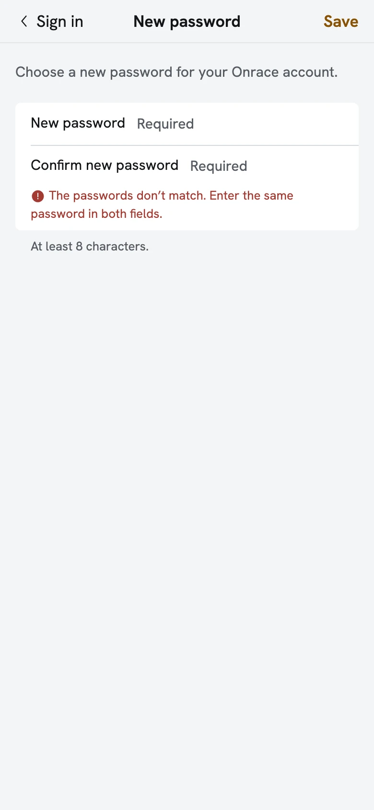
Profile -error, a row didn’t save


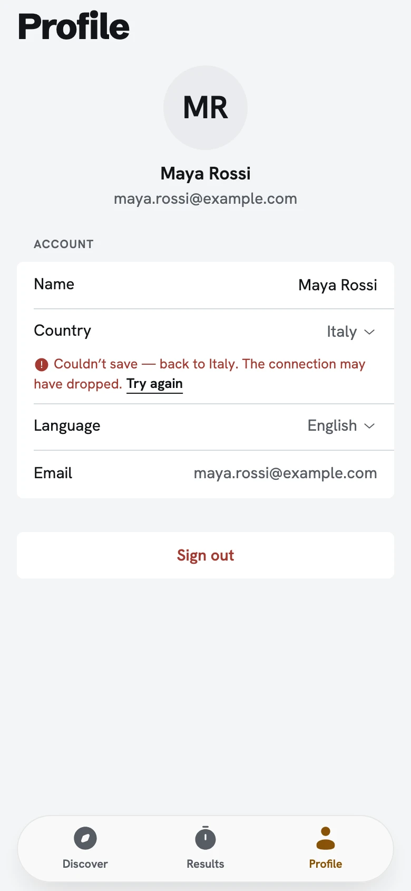

Unchanged screens: Log result -error, the link missing, Race browse, Results list, Race detail.
Tab bar · 5 changed
At rest


Hover

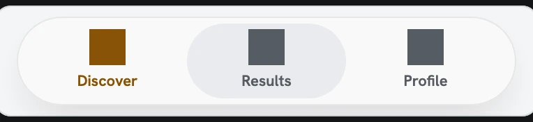
Pressed

Focus

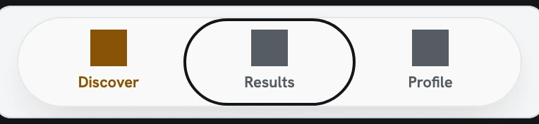
Disabled

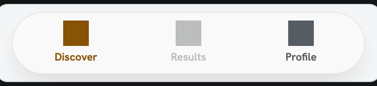
Top bar · 1 changed
Pressed

Search field · 5 changed
At rest

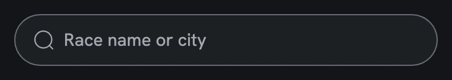
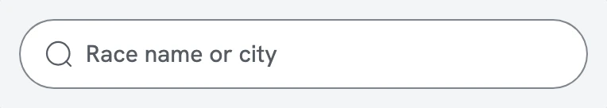

Hover
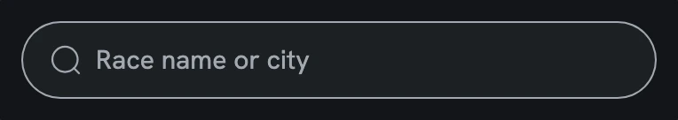


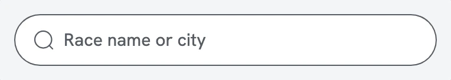
Pressed


Focus


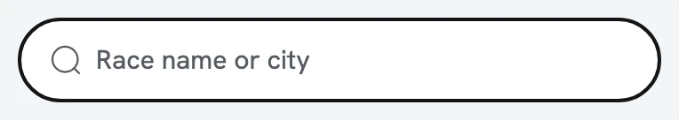

Disabled


Race card · 2 changed
Hover

Pressed


Result row · 2 changed
Hover

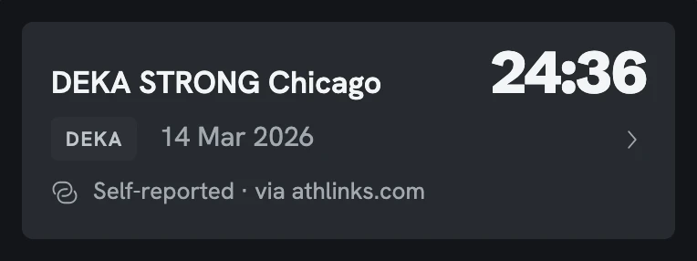

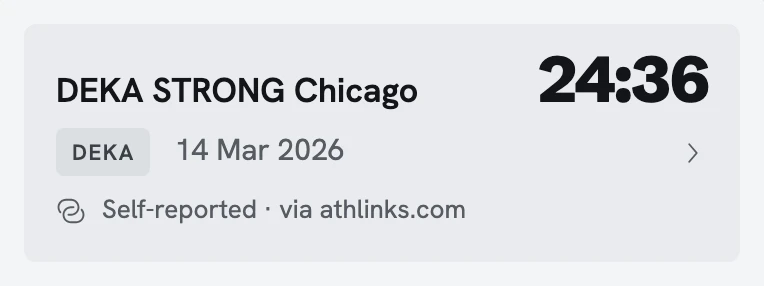
Pressed
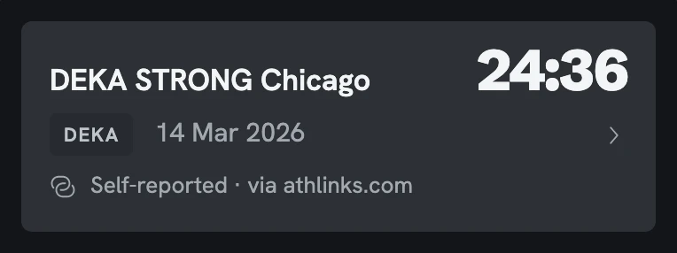
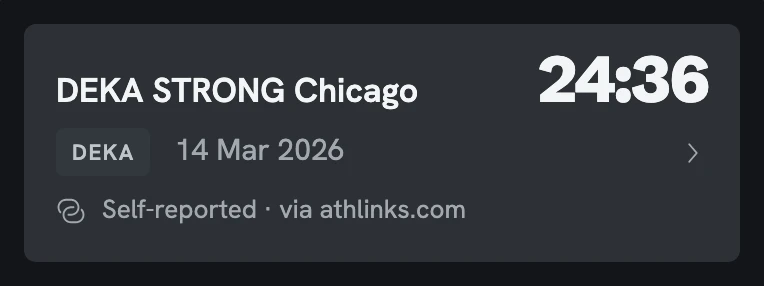
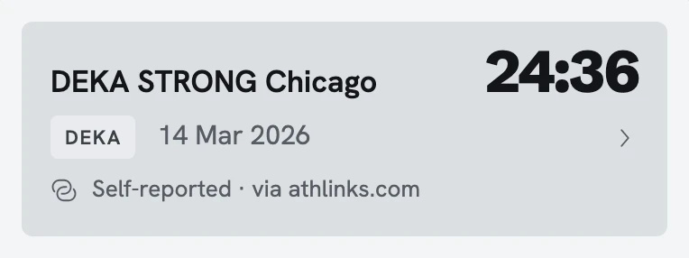
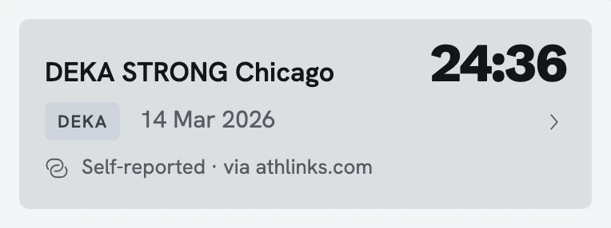
Primary button · 1 changed
Pressed
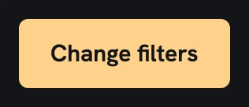
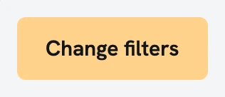
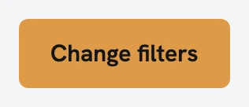
Active filter chips row · 5 changed
At rest


Hover


Pressed


Focus


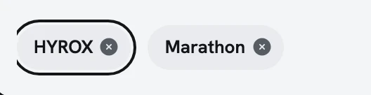
Disabled


Unchanged in both themes · 108
| Component | States |
|---|---|
| Top bar | At rest, Hover, Focus, Disabled |
| Segmented control | At rest, Hover, Pressed, Focus, Disabled |
| Sport-type rows | At rest, Hover, Pressed, Focus, Disabled |
| Race card | At rest, Focus, Disabled |
| Sort button | At rest, Hover, Pressed, Focus, Disabled |
| Result row | At rest, Focus, Disabled |
| Static map | At rest, Hover, Pressed, Focus, Disabled |
| Official race website link | At rest, Hover, Pressed, Focus, Disabled |
| Primary button | At rest, Hover, Focus, Disabled |
| Secondary button | At rest, Hover, Pressed, Focus, Disabled |
| Filters trigger with count | At rest, Hover, Pressed, Focus, Disabled |
| Text link | At rest, Hover, Pressed, Focus, Disabled |
| Text field | At rest, Hover, Pressed, Focus, Disabled, Invalid |
| Pop-up select | At rest, Hover, Pressed, Focus, Disabled, Invalid |
| Date field | At rest, Hover, Pressed, Focus, Disabled, Invalid |
| Catalog row | At rest, Hover, Pressed, Focus, Disabled |
| Linked race card | At rest, Hover, Pressed, Focus, Disabled |
| Forgot password? link | At rest, Hover, Pressed, Focus, Disabled |
| Action sheet | At rest, Hover, Pressed, Focus, Disabled |
| Grouped settings rows | At rest, Hover, Pressed, Focus, Disabled, Invalid |
| Sign out button | At rest, Hover, Pressed, Focus, Disabled |
| Confirm alert | At rest, Hover, Pressed, Focus, Disabled |